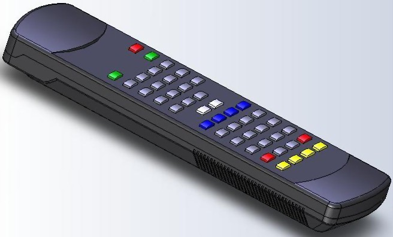
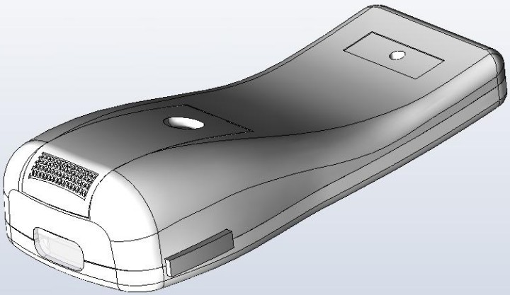
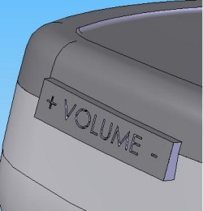
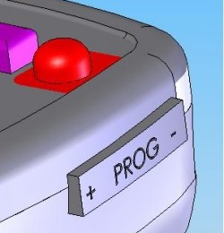
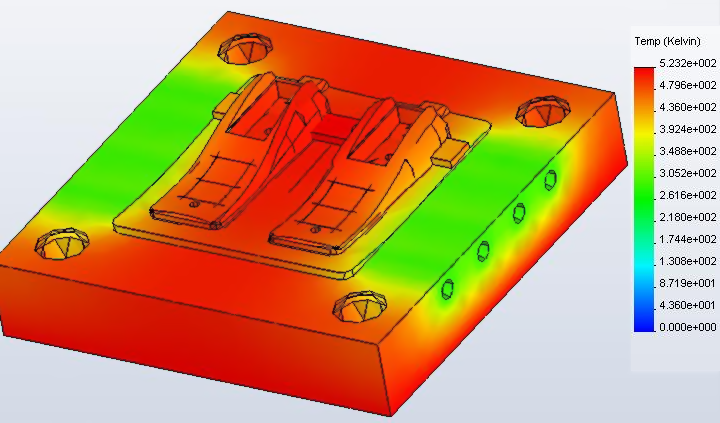
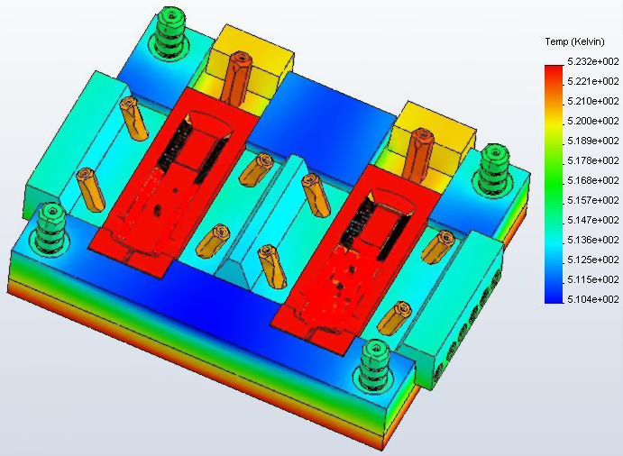
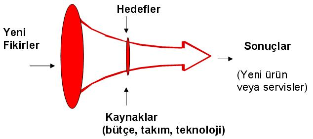

|
5. Estetik, ergonomi, kullanýþlýlýk, yenilik:
Geçmiþ yýllarda ürünlerin sadece ihtiyaçlarý karþýlayýp karþýlamadýðýna bakýlýrken günümüzde ürünlerin fonksiyon ve görevlerinin dýþýnda göze hoþ ve cazip görünmesi de ürün satýn almada oldukça etkilidir. Bu sebeple kumandalarý kýyaslayacak olursak;

Resim 22: 1 no'lu kumanda

Resim 23: 2 no'lu kumanda
Resim 22'de görülen kumandanýn genellikle düz hatlara ve ele oturmayan bir geometriye sahip olduðu görülür. Resim 23'de ki kumanda ise düzlem bir yüzeye konulduðunda alt tarafýnda kalan boþluktan parmak geçecek þekilde tasarlanmýþtýr. Ayrýca yuvarlak yüzeyler gelen darbeleri olasý bir düþme durumunda absorbe etme eðilimindedir. Bütün bunlarýn dýþýnda avuca sýðacak ebatlarda tasarlanmýþ ve radyüs ölçüleri ile eðrilik yarýçapý insan elinin ortopedisine göre hazýrlanmýþtýr. Sol tarafta görülen kumanda insan eline oturmadýðýndan elden kayýp düþmesini engellemek için alt kýsmýna doðru 1 mm geniþliðinde 70 mm boyunca kanallar açýlmýþ ve sürtünme alanýnýn artmasý saðlanmaya çalýþýlmýþtýr. Bu ise önemli bir iþçiliði beraberinde getirmektedir. (Dalma erozyon tezgahýnda dalýnmasý, bakýr elektrot hazýrlanmasý vb.) Diðer kumandanýn tasarýmýnda ise böyle bir yola gidilmemiþtir. Çünkü geometrik olarak elin þeklini alan bu kumandanýn elden düþürülme ihtimali azaltýlmýþtýr.
Oldukça önemli bir husus ise son zamanlarda yeni nesil cep telefonlarýnda kullanýlan yan fonksiyon tuþlarýdýr. Bir benzeri, ergonomik olan kumanda üzerine aþaðýda görüldüðü gibi uygulanmýþtýr.
 |
 |
Resim 24: Yeni fonksiyon tuþlarý |
Resim 25: Yeni fonksiyon tuþlarý (ýý) |
Bir televizyon kumandasýnda en sýk kullanýlan tuþlarýn PROGRAM ve SES tuþlarý olduðundan hareketle kumandanýn sað ve sol yanýna iki adet tuþ eklenmiþtir. Bu tuþlardan sol taraftaki ses sað taraftaki ise program tuþudur. Ayrýca ana gövde üzerinde yine bu tuþlar bulunmaktadýr.
6. Termal analiz ve sýcaklýk deðiþimleri:
Sac kalýplarýnda kesme boþluðu, bükme esnasýnda oluþan geri esneme ve bükme radyüsleri ile çekme radyüsleri ve derinlikleri ne kadar önemli ise hacim kalýplarýnýn tamamýnda ise termal genleþmeler ve ýsý transferleri de ayný ölçüde bir önem arz etmektedir. Plastik kalýplarýnda kullanýlan malzemelerin ýsýl dirençlerinin yüksek olmasý ve sýcaklýk altýnda kolay þekil deðiþtirmeleri istenmez, kararlý bir yapýya sahip olmalarý istenir. Plastik ürünlerin mümkün olan en az sýcaklýk farklarý ile basýlmalarý arzu edilen bir durumdur. Aksi halinde kalýp sýcaklýk altýnda þekil deðiþtirecek ve kalýpta birbiri ile çalýþan parçalar birbirleri ile düzenli bir þekilde çalýþmayacak bunun sonucunda kalýptan çýkan ürünlerin ölçüsü verilen tolerans deðerleri içerisinde olmayacaktýr. Resim 26 ve 27 de uzaktan kumandalarýn gövde ve çekirdeklerinin termal analizleri görülmektedir.

Resim 26: 1 no'lu kumanda termal analiz

Resim 27: 2 nolu kumanda termal analiz
PP copolymer malzeme kalýplanýrken kalýp sýcaklýðýnýn 20-70 °C, akýþkan sýcaklýðýnýn ise 220-280 °C arasýnda olmasý istenir. Analiz iþlemlerinde kalýp sýcaklýðý 50 °C, akýþkan sýcaklýðý 250 °C ve soðutma suyu sýcaklýðý 18 °C alýnmýþtýr. Bu durumda Resim 26 da görülen kalýp çekirdeði ve gövde arasýnda büyük bir sýcaklýk farký oluþmuþtur. Çekirdek sýcaklýðý hemen hemen kararlýlýk göstermekle beraber 240 °C civarýnda sabit kalabilirken kolon yerlerinde, kilitlemelerde ve kam millerinin olduðu yerlerde bu sýcaklýklar deðiþken deðerler göstermekle beraber 190 °C'ye kadar düþmüþtür. Resim 27 deki kalýp çekirdeðinde ve gövdesinde tam tersi bir durum oluþmuþtur.
Çekirdek bölgesinde sýcaklýk deðeri 225 ila 235 °C arasýndayken gövde sýcaklýðý da bu deðerlerdedir. Burç eksenlerinin kalýp boþluðuna yakýn olduðu anlaþýlmaktadýr. Burç eksen yerleri biraz daha dýþa doðru çekilebilir. Bu sayede burçlarýn soðuk kalmasý saðlanabilir. Aksi takdirde ýsýnmadan ötürü oluþacak genleþme ile burç delikleri geniþleyecek ve kalýbýn hareketli ve sabit gruplarý arasýnda hassas bir merkezleme saðlanamayacaktýr.. Ayrýca ýsýnmadan ötürü malzeme özelliklerini kaybederek kalýbýn kapanmasý durumunda burç ve kolonlarýn bir birini sarma tehlikesi ortaya çýkabilir.
Tartýþma ve sonuç:
| |
Kullanýmda olan kumanda |
Yeni tasarlanan kumanda |
| Plastik ürün boyutu |
- |
+ |
| Kalýp boyutu |
- |
+ |
| Plastik malzeme aðýrlýðý |
- |
+ |
| Kalýp malzemesi aðýrlýðý |
- |
+ |
| Montaj edilebilirlik |
+ |
- |
| Kalýplanabilirlik |
- |
+ |
| Talaþlý imalata uygunluk |
+ |
+ |
| Ýmalat süresi |
- |
+ |
| Ergonomi, kullanýþlýlýk, yenilik |
- |
+ |
| Termal analiz |
- |
+ |
Tablo 1: Kýyaslama tablosu
Her yeni ürünün baþarýsýnýn asýl test edileceði yer piyasadýr. Ürün yaygýn olarak üretilmeye baþlanmadan önce pazarda test edilmeli ve gerekirse deðiþiklikler yapýlmak üzere sürecin ilk aþamalarýna geri dönülmelidir.

Þekil 1: Ýnovasyon hunisi [1]
Yeni ürün geliþtirme süreci bir huni gibi görülebilir: Sayýsýz yeni fikirle baþlayan süreçte, bu fikirlerin hedefler ve eldeki kaynaklar doðrultusunda elimine edilmesiyle odak noktasý giderek daraltýlýr ve sonuçta pazara sunulan bir yeni ürün (veya servis) ortaya çýkar. Þekilde görülmekte olan inovasyon hunisi her zaman göz önünde bulundurulmalýdýr.
Tasarým kriterleri bir ürünün tasarýmýný önemli bir ölçüde etkilemektedir. Ergonomik olarak mükemmele yakýn bir ürün tasarlanabilir ancak talaþlý imalata ya da kalýplanabilirliðe uygun deðil ise hayata aktarýlamayacaktýr. Ya da kalýplanabilirliðe uygun olduðunda eldeki teknoloji yeterli deðilse örneðin bir 5 eksen CNC freze ya da kalýbýn ebadýna göre bir pres makinesi yoksa yine tasarým hayata geçemeyecektir. Unutulmamalýdýr ki günümüz teknoloji çaðýdýr ve sadece kaliteli parça imal etmek yeterli deðildir. Kaliteli, hýzlý, ergonomik ve güvenilir parçalarý minimum maliyetlerle piyasaya süren firmalar faaliyetlerini sürdürmeye devam edebileceklerdir.
Kaynaklar:
1. Dr. Evrim Didem Güneþ, Ýnovasyon yönetimi; Yeni ürün geliþtirme süreçlerine giriþ, 2006
www.TurkCADCAM.net/rapor/inovasyon-urge
2. Sami Ergüney, Çetin Karataþ, Süleyman Sarýtaþ, Ticari plastiklerin kalýpta akýþ boylarýnýn incelenmesi, 2005
3. SECO Takým seçim katalogu, 2005
4. Doç Dr. Fethi Halýcý, Uzm. Mehmet Gündüz, Örneklerle ýsý geçiþi, 2001
5. Ahmet Barýþ Kuldaþlý, Plastik enjeksiyon simülasyonu, TurkCADCAM.net Dergisi, Ocak-Þubat 2006
6. Prof Dr. Yusuf Þahin, Talaþ Kaldýrma prensipleri 1. cilt, 2003
Uzaktan kumandanýn tarihçesi:
|